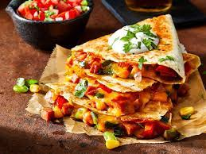

Quesadillas

Description
These cheesesteak quesadillas are a family-favorite meal in my household.
Ingredients
- 1 (1 pound) beef top sirloin, thinly sliced
- 2 small onions, sliced
- 2 medium green bell peppers, sliced
- 1 cup barbeque sauce (such as Bull's-Eye® Texas-Style Bold Barbeque Sauce)
- 8 (10 inch) flour tortillas
- 2 cups shredded Cheddar cheese
Steps
- Preheat the oven to 425 degrees F (220 degrees C).
- Cook and stir beef in a skillet over medium heat until browned, 5 to 7 minutes. Add onions and bell peppers; cook and stir until softened, 5 to 10 minutes. Pour barbeque sauce over beef mixture and simmer until sauce is slightly reduced, about 10 minutes.
- Lay 4 tortillas on a baking sheet; top each with beef mixture, Cheddar cheese, and remaining tortillas.
- Bake in the preheated oven for 10 minutes. Flip quesadillas and cook until cheese is melted, about 5 minutes more.